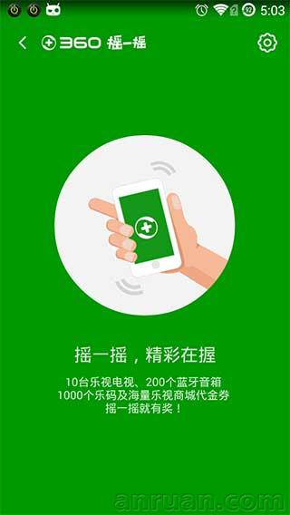
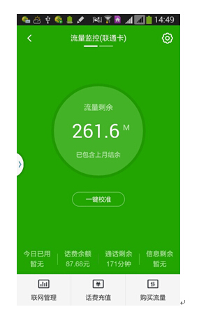
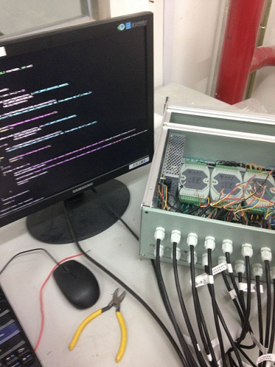
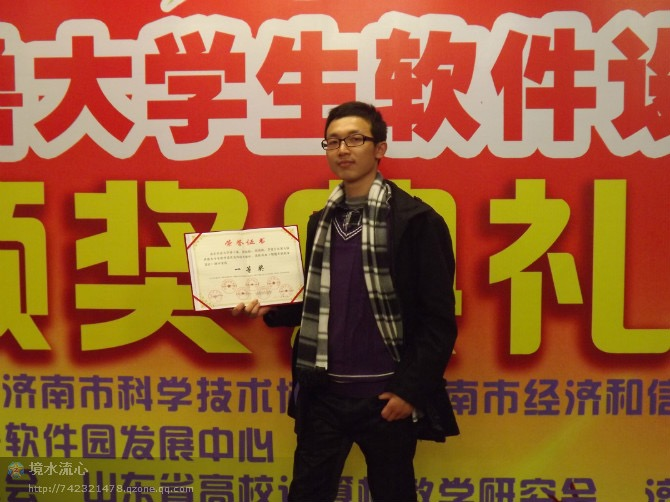

Linux amateur, Software Engineer, postgraduate
focus on Server development, BigData(Hadoop, storm).
-
Hadoop & Storm

-
- 使用Hadoop集群统计摇一摇业务签到，pv，uv，中奖次数等统计
- Map/Reduce streaming 模式（PHP 编写）
- Map/Readuce java
- 使用storm实时分析营业厅推广log
- Streaming接口和java各实现一版
-
Hadoop
Map
Reduce
java
php
-
手机卫士流量API接入 & 上线自动化验证脚本

-
- 负责手机卫士流量模块北京移动流量订购和查询API的开发
- 开发北京移动流量API接入模块
- 编写服务端程序上线自动化验证脚本
- 提供多方式，多case验证
-
php
json
protobuf
-
联通总公司大型机房温湿度可视化监控系统<

- 参与联通方项目会议，沟通需求
- 参与温湿度传感器，R485等硬件设备采购
- 负责设计与开发温湿度可视化监控系统, Linux平台
- 包括温湿度数据采集，MySQL数据存储，可视化展示，温湿度异常报警
-
modbus
MySQL
C
html
js
D3
-
APT攻击与防御研究

- 研究生课题，与移动研究院合作教育部级项目
- 参与调查研究APT典型攻击案例,如谷歌极光，叶龙攻击等
- 分析APT的生命周期，主要攻击和躲查杀手段
- 移动资产管理脆弱性验证
-
Kali
实验
文档
-
第三届"蓝桥杯"全国软件设计大赛

- 山东赛区一等奖
- 进入全国总决赛，并获二等奖
- java组，个人赛
- 大三下学期
-
算法
java
-
齐鲁软件大赛

- 大二暑假参与开发
- 团队竞赛，一等奖，物流末端管理系统（包括app,服务端，web管理页面）
- 负责服务端程序开发
- 参与数据库设计，需求设计，程序框架设计
- Partner : 孙子谦，隋宛辰，刘清政
-
java
mysql
UML
View
-
ACM/ICPC山东省省赛
- 团队竞赛，银奖
- 大二下学期，算法竞赛
- 学校算法编程培训
- Partner : 李明耀，许加海
-
C++
算法
team